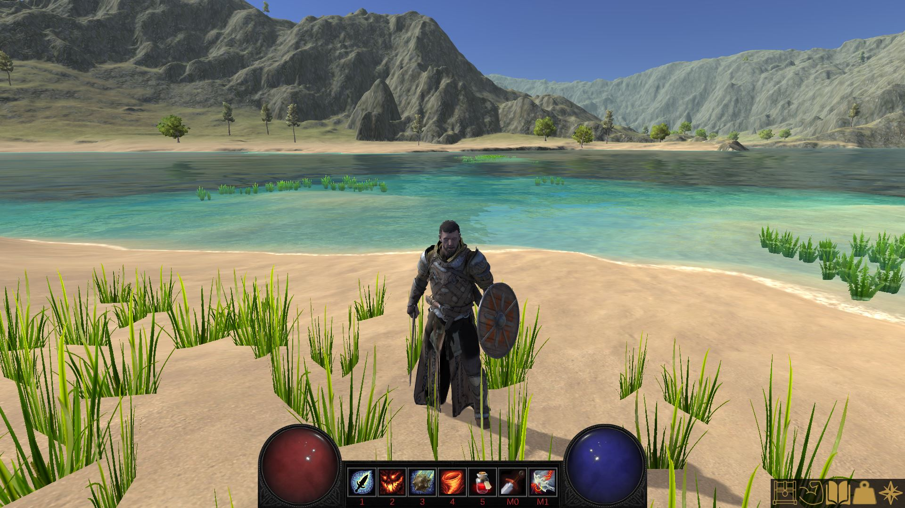
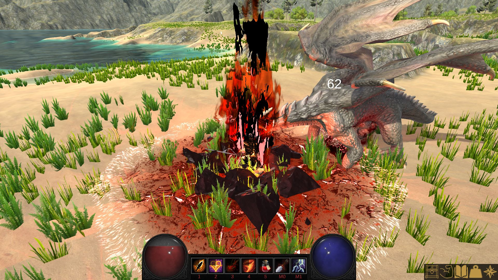

Fireheart
Fireheart is a 3D open world third person action RPG game for Windows PC built using the Unity game engine.
Featuring a large, open world for the player to explore, an original story line, a dynamic player progression system, and fast paced combat with many unique abilities for the player to choose from, Fireheart will appeal to both casual and hardcore gamers alike.
Being an RPG, player progression is a core aspect of Fireheart. The player can unlock new abilities and equip new powerful equipment as he/she gains experience and levels up by exploring the word, defeating enemies, and completing quests.
Fireheart begins with you finding yourself shipwrecked in an unknown land. Through careful investigation, you find that not all is right in this strange place. Will you brave the unknown and unravel the mystery surrounding the town and its inhabitants?Download the Game
Click the button below to download the game from Google Drive.
Installation Instructions
- Ensure your system meets the minimum requirements shown here
-
Click the download button above to be taken to the Google Drive file location. You will see this screen
NOTE: You may see a "Whoops! There was a problem with the preview" screen. If you do, just click the download button to download the zip file.
-
Click the "Download" button in the top right of the screen. A new tab will open and you will be taken to this screen
- Click "Download anyway" and wait for the download to finish
-
Open the folder where you downloaded the zip file (usually in your "Downloads" folder), click on the zip file, and then click "Extract all". You will see this screen
- (Optional) Choose an install location to extract the game files. The default location is the location where the zip file was downloaded to
-
Click the "Extract" button to extract the files. It may take some time to extract the game files. When finished, you should see a new folder named "Fireheart" in your chosen extraction location
-
Double click the "Fireheart" folder (the newly extracted one, not the zipped file). The folder contents should look like this
-
Double click the "Fireheart.exe" file to run the game (NOTE: Windows may pop up a warning mentioning an unknown publisher! Click "More Info" and then click Run Anyway). After running the "Fireheart.exe"
file, the game configuration window will show. Select your graphical preferences (we suggest trying to run on Ultra first, and then work your way down until you find a graphics quality that your machine can handle)
and click "Play!"
- Enjoy the game!
Meet the Dev Team
Robert Herber
Project Owner | Game Developer/Programmer | Gameplay and Mechanics Designer | UI Designer
- Developed the initial idea and overall vision of the project
- Designed and implemented all of the game's code
- Designed and implemented all of the game's features and gameplay mechanics
- Designed and implemented all of the game's user interfaces
- Designed and built this website and the custom bugtracker
Lawrence Ferretti
Writer | Level Designer | World Designer
- Wrote the game's main quest line and side quest lines
- Developed the game's lore and characters
- Designed and built the game world's terrain, towns, points of interest, and inhabitants
- Designed and built the dungeon
Screenshots



Videos
How to Play
Movement Controls
- Click on the ground to move to that location
Camera Controls
- Use "A" and "D" (or "Left Arrow" and "Right Arrow") to rotate the camera around your character
- Use the mouse scroll wheel to zoom the camera in and out
Combat Controls
- Abilities are assigned to one of the following keys: 1, 2, 3, 4, 5, Left Click (M0), or Right Click (M1)
- You can see which key an ability is assigned to by looking at the action bar. The assigned key will be below the ability
- To use an ability, press the key that it is assigned to
- Clicking the ability icon in the action bar will also activate the ability
- Some abilities (such as your weapon attack) require a target to use. Mouse over an object (your mouse cursor will be outlined in red if the object is attackable) and press the assigned key to use the ability on that target
- Abilities can only be used when they are not on cooldown. If the ability's icon in the action bar is grayed out, that indicates that the ability is on cooldown
Selecting Abilities
- You can select many different abilities to fit your playstyle
- You unlock new abilities by leveling up
- Your currently selected abilities will appear on your action bar
- Mouse over an ability icon to view a detailed tooltip describing the ability
- To select new abilities, open the ability window by pressing "N" or by clicking the arm icon in the menu bar
- Left click on a new ability in the ability window to assign it to the appropriate key on the action bar
- Abilities have level requirements. You will be unable to select an ability if you are not high enough level to use it
- Each ability is assigned to a specific action bar key. The key the ability is assigned to is shown above a row of abilities in the abilities window
- You cannot select a new ability if the current ability occupying the new ability's action bar key is on cooldown (for example, both the Renew and Summon Rock Golem abilities are "2" abilities. If Summon Rock Golem is currently selected and you just used it (putting it on cooldown), you cannot swap to the Renew ability until Summon Rock Golem is off cooldown)
- Click the "X" button (or press "N" while the window is open) in the top right of the window to close the window
Interacting with Objects
- You can interact with many objects in the game world
- Your mouse cursor will be outlined in blue if it is over an interactable object
- Left click an interactable object while mousing over it to interact with it
-
Interacting with an object can be any of the following:
- Talking with an NPC
- Looting an object
- Inspecting an object
- Mining an ore deposit
- Opening a door
- And many more!
Completing Quests
- Fireheart's story is told through quests
- A gold exclamation point above an object indicates that the object has a quest for you
- Left click on a quest object to open the quest giver window
- Left click on a quest in the top left section of the window to display information about the quest
- Left click on the "Accept" button to accept the quest. This will close the quest giver window
- If this quest giver is the turn in point for any quests you are currently on, those quests will appear in the "Active Quests" section of the window
- Click on a quest in the Active Quest section to display information on the quest
- If you have completed the quest objectives, click the "Complete Quest" button to complete the quest and receive your rewards. This will close the quest giver window
- Click the "X" button in the top right of the window to close the window
- Click the book icon in the menu bar or press the "J" key to open and close your quest log
- All of your current quests will appear in the left side of the quest log
- Click on a quest to display information on the quest
- Click the "Abandon" button to abandon the quest. This will reset any progress you have made on the quest. Visit the quest giver who initially gave you the quest if you want to pick it up again
- Click the "X" button (or press the "J" key) in the top right of the window to close the window
- A gray question mark above a quest giver's head indicates that you have an incomplete quest that will be turned into this quest giver
- A gold question mark above a quest giver's head indicates that you have an completed quest that is ready to be turned into this quest giver
Gaining Experience and Leveling Up
- You will gain experience by killing enemies and completing quests
- You will level up whenever you gain enough experience to do so. The amount of experience needed to reach the next level can be found in the inventory window
- The amount of experience needed to level up increases with each level
- Leveling up grants you 10 additional health, 1 additional attack power, the ability to equip more powerful equipment, and access to new abilities
Inventory, vendors, looting, using, and equipping items
- You will come across many items that you can use or equip during the game
- Press "B" or click on the chest icon in the menu bar to open and close your inventory
- Left click on an item in your inventory to equip/use the item
- Mouse over an item to view a detailed tooltip about the item
- Left click on the red "x" on the item icon to drop an item from your inventory (it will be permanently deleted)
- Left click on an equipped item in your equipment menu to unequip the item
- Some items will have a level requirement (shown in the item's tooltip). If you are not at or above the level requirement, you will not be able to use or equip that item
- Some items are stackable (meaning having multiple of the same stacked item will only take up one slot in your inventory). There will be a number in the bottom right corner of the item's icon indicating how many of that stackable item you have
- The amount of gold you have is displayed in the bottom left corner of your inventory
- Click the "X" button (or press "B" while your inventory is open) in the top right of the inventory window to close your inventory
- Some objects in the game are lootable. The loot window will appear after interacting with a lootable object
- Left click an item in the loot window to loot the item (it will be removed from the loot window and added to your inventory)
- Left click the "Loot All" button or press "Space" to loot all of the items in the loot window. This will automatically close the loot window
- Click the "X" button in the top right of the loot window to close the loot window
- Some NPCs in the game are vendors and can sell items. After interacting with a vendor, the vendor window will appear
- Left click an item in the vendor window to buy the item (if you have enough gold, the cost of the item will be deducted from your funds and the item added to your inventory)
- Left Shift + Left click on an item in your inventory to sell it to the vendor. The item will be permanently deleted and you will receive its sell value in gold
- Click the "X" button in the top right of the window to close the window
Crafting Items
- Some items can be crafted by the player
- Click the "Weight" icon in the menu bar or press "K" to open the crafting window
- Your crafting skill level will appear at the top of the window. The higher your skill, the better items you can craft. You gain skill levels by crafting items
- Use the mouse scroll wheel or the scroll bar to scroll up and down the craftable items list
- Click on an item in the left of the menu to view details about crafting it
- The item details will show the required material (gathered from the game world) and the required crafting skill needed to craft the item
-
Click the "Craft Item" button to craft the item.
- If you don't have the required materials or your skill level is not high enough, you will not be able to craft the item.
- If you are able to craft the item, the materials needed to craft the item will be removed from your inventory and the crafted item will be added to your inventory
- Click the "X" button (or press "K") in the top right of the window to close the window
The World Map
- Fireheart features a map that will help you navigate the world
- To open your map, press the "M" key or click the map icon in the menu bar
- While the map is open, use your mouse scroll wheel to zoom in and out
- While the map is open, use the "WASD" keys or the arrow keys to move around the map
- While the map is open, press the "H" key to snap back to your character
- To close your map, press the "M" key again or click the "X" button in the top right corner of the map
Saving Your Progress
- Fireheart allows you to save your progress at any time so that you can quit playing and pick up where you left off when you want to play again
- To save your game while playing, either press "F5" or click the "Save Game" button in the pause menu
- To load your saved game, click the "Continue" button from the main menu or click the "Load Game" button from the pause menu
- Fireheart only supports one save game file at this time
Changing the Difficulty
- Fireheart has multiple ways to change the difficulty of your foes to fit your playstyle
- To change the overall difficulty of your enemies, go to the main menu, click on the "Options" button, and select a difficult setting
- Setting the difficulty to "Easy" will reduce all enemies health and attack power by 50%
- Setting the difficulty to "Normal" will set all enemies health and attack power to their default values. This is the game's default setting
- Setting the difficulty to "Hard" will increase all enemies health and attack power by 50%
- You can choose to allow your enemies to level up as you do to keep them a challenge. From the main menu, click the "Options" button and enable enemy upscaling
Stat Descriptions
- You will find a number of unique stats on gear your acquire throughout your adventures
- You can view your stats on the inventory window in-between the inventory and equipment sections
- The "Level" stat is your current level. This is an "at a glance" estimation of your current power
- The "Experience" stat is your current experience followed by the experience required to reach the next level
- The "Health" stat is your current health followed by your max health. If you health reaches 0, you die
- The "Mana" stat is your current mana followed by your max mana. Mana is used to power all of your abilities except for your weapon attacks. You cannot use an ability if you don't have enough mana
- The "Armor" stat is determines how much damage done to you is reduced. Your armor stat is a percentage (up to 80%) reduction of all damage done to you (for example, if you have an armor stat of 15, you take 15% less damage from all sources). Keep in mind that enemies have armor too!
- The "Attack Power" stat determines the magnitude of your abilities (both damage to enemies and healing to friendlies). All of your abilities damage and healing is calculated using your attack power stat
- The "Critical Strike Chance" stat determines your chance of dealing double damage or healing. It is percentage based, so a critical stike chance stat of 20 means that all of your damaging and healing abilities have a 20% chance to be twice as effective
- The "Health Regain" stat determines how fast you heal from your wounds. You will heal for whatever your health regain is every 5 seconds
- The "Mana Regain" stat determines how fast you gain mana. You will gain your mana regain stat in mana every second
Keyboard Shortcuts
- "B" to open and close your inventory
- "ESC" to pause the game
- "N" to open the talent selection menu
- "J" to open your quest log
- "K" to open the crafting menu
- "M" to open the world map
- "F5" to save your game
- "Space" while the loot menu is open to loot all of the items
System Requirements
Minimum System Requirements
- Operating System: Windows 10
- CPU: i5 2500 or equivalent (or better)
- 6GB RAM (or more)
- GPU: Nvidia GTX 660 or equivalent (or better)
- Disk Space: 5GB of free disk space (or more)
Recommended System Requirements
- Operating System: Windows 10
- CPU: i5 3570K or equivalent (or better)
- 8GB RAM (or more)
- GPU: Nvidia GTX 960 or equivalent (or better)
- Disk Space: 5GB of free disk space (or more)